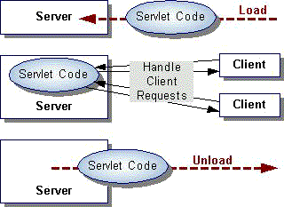

Feedback Form
|
|
Start of Tutorial > Start of Trail |
Search
Feedback Form |
Each servlet has the same life cycle:
- A server loads and initializes the servlet
- The servlet handles zero or more client requests
- The server removes the servlet
(some servers do this step only when they shut down)
When a server loads a servlet, the server runs the servlet's
initmethod. Initialization completes before client requests are handled and before the servlet is destroyed.Even though most servlets are run in multi-threaded servers, servlets have no concurrency issues during servlet initialization. The server calls the
initmethod once, when the server loads the servlet, and will not call the init method again unless the server is reloading the servlet. The server can not reload a servlet until after the server has destroyed the servlet by running thedestroymethod.
After initialization, the servlet is able to handle client requests. This part of the servlet life cycle was handled in the previous lesson.
Servlets run until the server destroys them, for example, at the request of a system administrator. When a server destroys a servlet, the server runs the servlet's
destroymethod. The method is run once; the server will not run thedestroymethod again until after the server reloads and reinitializes the servlet.When the server calls the
destroymethod, another thread might be running a service request. The Handling Service Threads at Servlet Termination lesson shows you how to provide a clean shutdown when there could be long-running threads still running service requests.
|
|
Start of Tutorial > Start of Trail |
Search
Feedback Form |